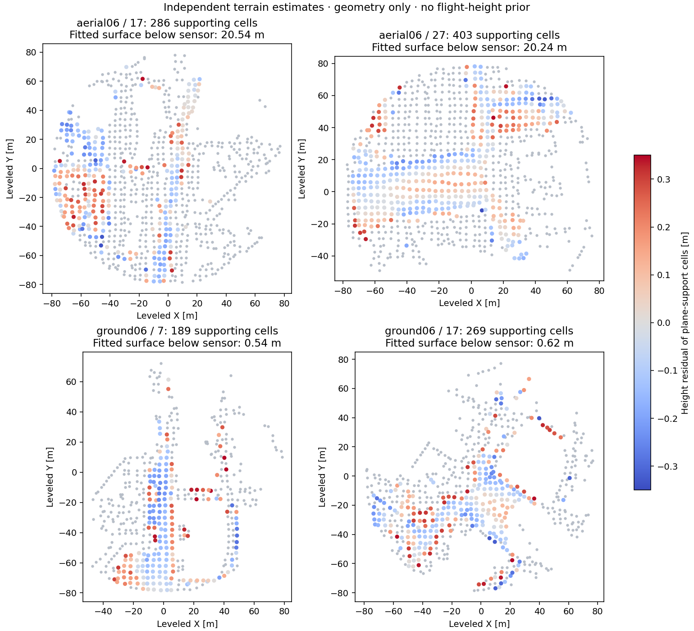

Ground–aerial multilayer ellipsoid BEVs
Height bands refer to an independently estimated terrain surface, not the sensor origin. The RANSAC acceptance gate remains strictly more than five inliers. All panels share the original pair’s display heading and scale. No ground truth, registration, PCM or CBS was used in this preview.
 Green: layer-specific RANSAC inliers. Orange: rejected matches. A passing 2D gate does not establish a valid 3D loop.
Green: layer-specific RANSAC inliers. Orange: rejected matches. A passing 2D gate does not establish a valid 3D loop.
All height layers for this pair

Terrain estimation and limitations
A robust plane fits spatially distributed low-height map cells independently in each snapshot. It estimates a dominant low surface; roof-only observations or nonplanar terrain can invalidate its interpretation as ground. Layers use unchanged native density images and match independently; inlier counts are not added across bands.

Method and complete results · Reference papers and adaptations · Numeric diagnostics